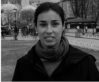
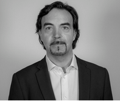
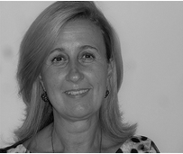
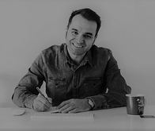
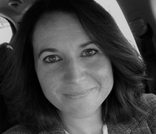
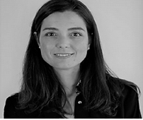
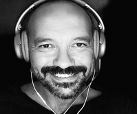
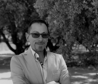

jueves 20 de noviembre |
|||
|
Beatriz Martos  Beatriz es responsable de educación en Smile and Learn. Especialista en nuevas metodologías de aprendizaje y TIC, tiene 8 años de experiencia en el mundo de la discapacidad intelectual, con niños y adultos. Actualmente, sigue uniendo tecnología y educación. |
Félix López  Félix es Director de SEK Lab Edtech Accelerator. Ha dirigido departamentos de marketing y ventas en varias multinacionales y Pymes. Ha mentorizado más de 30 startups. Félix estudió ADE y Marketing y es Master en Publicidad por ICADE y en Marketing por la UPM. |
Luisa Mª Mesías  Luisa es Directora del C.P.E.E La Quinta. Con más de 32 años en la función pública, es especialista en Ed. Física, Ciencias Naturales, Primaria, Matemáticas y Pedagogía Terapéutica. Tiene un Master de Dirección en Centros de Innovación y posee 10 Sellos de Calidad Nacional y 6 Europeos. |
Manu Velasco  Manu es Director del C.P.E.E Los Cantos. Con más de 28 años en la función pública, es especialista en Ed. Física y Pedagogía Terapéutica. Tiene un Master de Dirección en Centros de Innovación. |
Viernes 21 de noviembre |
|||
|
Sara Morencos  Sara es profesora de Educación Infantil y Primaria. Desde hace varios años trabaja centrada en la etapa de Infantil dirigiendo sus esfuerzos a llegar al objetivo de integrar la tecnología en esta etapa. |
Belén Tubio  Belén es de Directora de Educahop! y Responsable de Desarrollo de negocio de Alventus. Tiene más de 17 años de experiencia en el lanzamiento y desarrollo de iniciativas en educación y formación y en financiación de proyectos. Belén estudió Economía y tiene un MBA por IESE. |
David Santos  David es maestro y director de un colegio público. Apasionado de la educación, la tecnología, la productividad y el podcasting. Tiene tres podcasts en los que comparte sus reflexiones, experiencias y todo lo que se le ocurre relacionado con los temas mencionados. |
Óscar Martín  Óscar es Director del CEIPS Santo Domingo de Algete y Presidente del Consejo de Directores de Madrid. Ha puesto en marcha proyectos de innovación y mejora del modelo de liderazgo en la nueva sociedad de la información. Ha publicado libros y artículos y realiza conferencias. |
© Prueba realizada por Julen Serrano Arrieta